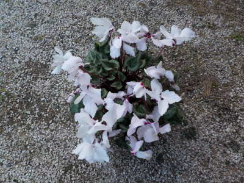
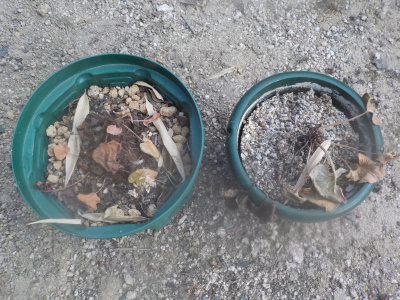
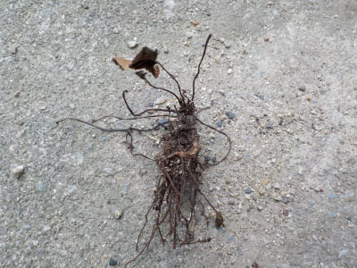
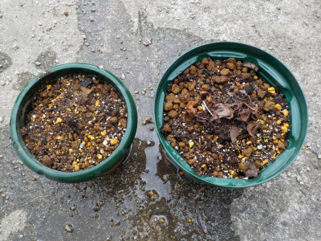
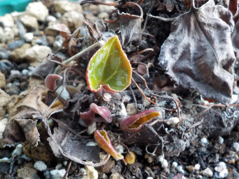

シクラメンが安かったので買いました。
2022/01/08

もう買わないと決めていたシクラメンですが、安かったので買ってしまいました。
このボリュームで税込み300円とちょっとでした。
底面給水の鉢だけでも300円くらいしそうです。
更新日 : 2022/11/06
2022/01/08

もう買わないと決めていたシクラメンですが、安かったので買ってしまいました。
このボリュームで税込み300円とちょっとでした。
底面給水の鉢だけでも300円くらいしそうです。
2022/07/31

休眠状態になるように水を与えないようにしていました。
枯れましたね。
秋に水を与えたら復活する予定ですが、復活するのかな？
2022/10/10

シクラメンの土を新しくしようと抜いてみたら、球根がありませんでした。休眠してたんじゃなくて枯れてたってことか。

でもちょっと上の部分が硬かったので鉢に植えました。芽が出るかな。
隣の大きいのはガーデンシクラメンです。こっちは大きな球根があるのできっと育つでしょう。
2022/11/06

水をやりをしだして、1月くらい経ってやっと芽が出ました。葉っぱがとっても小さいです。
お店では花が咲いているものが売っているので、だいぶ遅いですね。休眠させない方が良かったかな。
普通のシクラメンは芽が出なかったので、枯れていたようです。